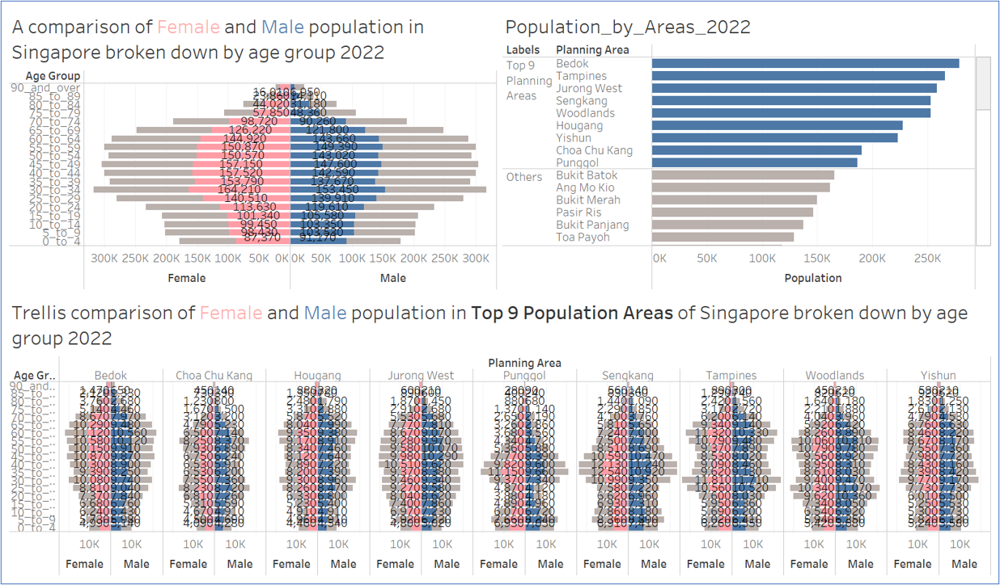
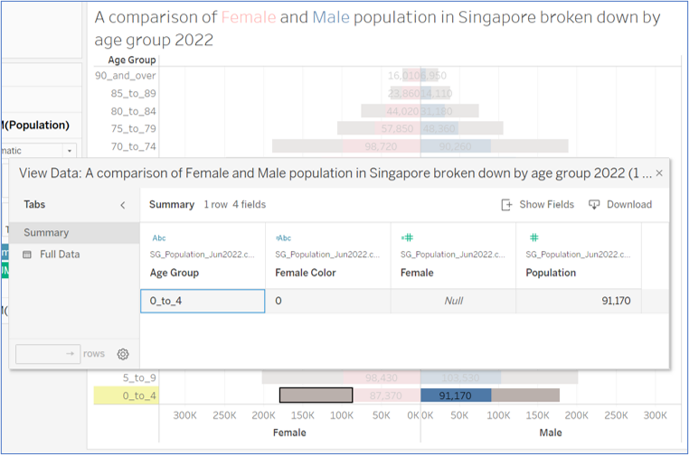
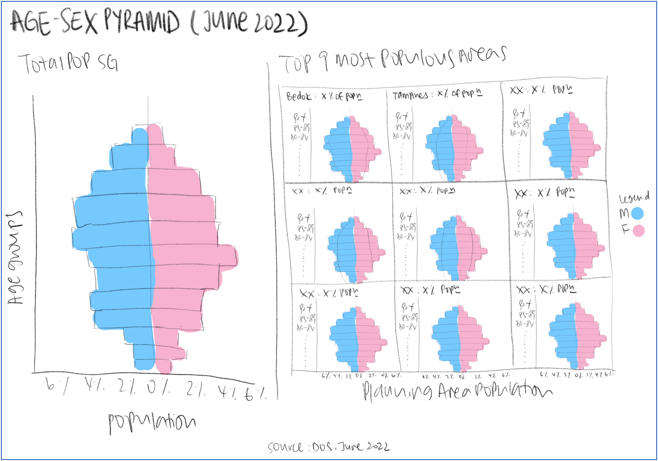
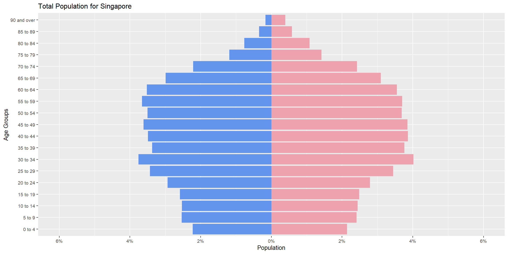
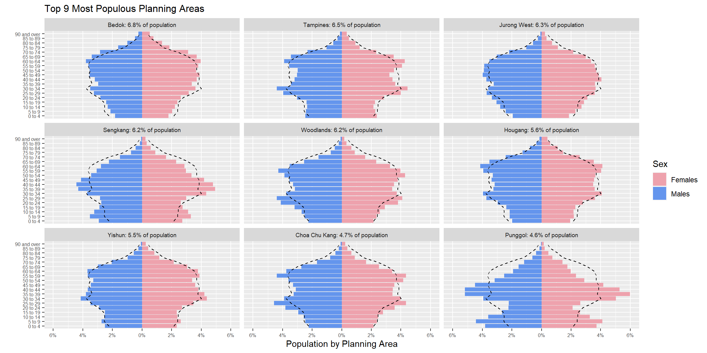
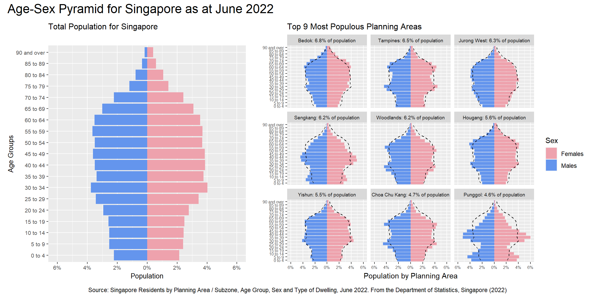

pacman::p_load(tidyverse, patchwork, scales)
pop_data <- read_csv("data/respopagesextod2022.csv",show_col_types = FALSE)
#Replace underscores in age group (AG) with spaces
pop_data$AG <- gsub("_", " ", pop_data$AG)
#Reorder age group (AG)
level_order <- c("0 to 4", "5 to 9", "10 to 14", "15 to 19",
"20 to 24", "25 to 29", "30 to 34", "35 to 39",
"40 to 44", "45 to 49", "50 to 54", "55 to 59",
"60 to 64", "65 to 69", "70 to 74", "75 to 79",
"80 to 84", "85 to 89", "90 and over")Take Home Exercise 2
Task
In this Take Home Exercise, a peer submission of a visualization on the Age-Sex Pyramids by Planning Area in Singapore is critiqued on clarity and aesthetics, redesigned using data visualisation principles and best practices, and remade using ggplot2, ggplot2 extensions and tidyverse packages.
Data Source
The data “Singapore Residents by Planning Area / Subzone, Age Group, Sex and Type of Dwelling, June 2022” used for this Take Home Exercise is obtained from the Department of Statistics, Singapore in csv format.
Critique of Peer Submission
The following peer submission will be reviewed and remade in terms of clarity and aesthetics:

Clarity
What Worked Well
In general, the visualization is clear in terms of layout. Each chart within the submission has a chart title to annotate what the chart is about, which makes the objective of the visualization clear to the reader.
The display of an overall age-sex pyramid of Singapore population also provides a good reference against the age-sex pyramids of the top nine most populous planning areas.
Areas of Improvement
However, the age-sex pyramids appear confusing to the reader as it is unclear what the grey bars represent, since it is not clearly annotated on the chart.
In addition, due to the size of the data labels, the pyramid charts appear cluttered and it is difficult to analyze the shape of each pyramid, especially those within the trellis display.
Another possible area of improvement in the visualization is the placement of the Male vs. Female populations. As age-sex pyramids are technical diagrams used by those studying population geography, conforming to the standard practice of graphing the Male population on the left side of the pyramid and the Female population on the right may make the visualization more intuitive for readers to interpret.
Lastly, while the top-right chart shows the top nine most populous planning areas ranked in descending order, the trellis display does not make use of the same order to arrange the age-sex pyramids of the planning areas. Conforming to the same display order may also improve readability of the visualization.
Aesthetics
What Worked Well
The choice of blue and pink bars are pleasing to the eye and provide clear and intuitive distinction between the Male and Female populations respectively.
Areas of Improvement
However, the large data labels clutter the visualization with unnecessary detail and take the attention away from the shape of the age-sex pyramids. In addition, the age group labels are presented in their raw form with the underscores (_) in the label, which adds to the clutter.
Upon further examination of the chart, it also appears that the grey bars are showing the population of the opposite gender i.e. the grey bars in the "Female population" side of the pyramid are showing exactly the same data as the blue bars in the "Male population" side, and vice versa (Fig 2). This means that there are duplicates of the same information within the chart that do not value add to the chart.

Another area of duplication in the visualization is the highlighting of the top nine most populous planning areas. Apart from being shown in the trellis display, it is also shown in the top-right graph “Population by Areas”, suggesting the latter could be made redundant and incorporated into the former.
Sketch of Proposed Design

A major change in my proposed design is to plot the proportion of population that falls into each gender and age group instead of the actual population numbers. We are able to do this as from the original visualization, we know that the population size of the top nine most populous planning areas do not significantly differ from one another. In addition, by making this change, it will allow us to include a reference line within each planning area pyramid, that would show the percentage of male and female population for Singapore in each age group.
In my proposed design, I have also kept the elements which are highlighted as working well in the original visualization. However, elements that are highlighted as duplication have been excluded, i.e. the grey bars in the pyramid charts and the additional chart highlighting the top nine most populous planning areas. Only the overall age-sex pyramid of Singapore population and the trellis display showing the age-sex pyramids of the top nine most populous planning areas are kept. With this change, the trellis display will also be changed from a horizontal trellis panel layout to a 3x3 trellis grid layout for a more efficient use of space.
The trellis display will also be reordered such that the age-sex pyramid of the most populous planning area in Singapore will be shown in the first pane, followed by the pyramid of the second most populous planning area and so on. The population of each planning area is also shown as a percentage of the total Singapore population in the planning area label above each pane for reference.
Lastly, the age group labels will be renamed without the underscores(_) and the large data labels are removed from the charts to reduce clutter in the chart.
Remake of Original Submission
Data Wrangling
The packages tidyverse, patchwork and scales will be used to remake the visualization.
After the data is loaded, the age groups labels are tidied up to remove the underscores (_) and reordered in chronological order (young at bottom, elderly at top).
The data is then tabulated accordingly and prepared for use in the various age-sex pyramids plots (total and by planning area).
#Tabulate population by age group (AG), planning area (PA) and gender (sex)
pop_data_tab <- pop_data %>%
group_by(PA, AG, Sex) %>%
summarise(Pop_sum = sum(Pop)) %>%
ungroup()
#Filter for top 9 planning area (PA)
percent <- function(x, digits = 1, format = "f", ...) {
paste0(formatC(x * 100, format = format, digits = digits, ...), "%")
}
top9pa <- pop_data_tab %>%
group_by(PA) %>%
summarise(PA_pop = sum(Pop_sum)) %>%
mutate(PA_pop_pct = percent(PA_pop/sum(pop_data$Pop))) %>%
top_n(n=9, wt=PA_pop) %>%
arrange(desc(PA_pop)) %>%
ungroup()
#Compute planning area (PA) % per age group (AG)
pop_data_PA_pct <- pop_data_tab %>%
group_by(PA) %>%
mutate(PA_sum = sum(Pop_sum)) %>%
group_by(PA, AG) %>%
mutate(PA_pct = Pop_sum*100/PA_sum) %>%
ungroup()
#Tabulate population by age group (AG) and gender (sex)
pop_total <- pop_data %>%
group_by(AG, Sex) %>%
summarise(Pop_sum = sum(Pop)) %>%
mutate(AG = factor(AG, level = level_order))%>%
arrange(AG) %>%
ungroup()
#Compute overall % per age group (AG)
pop_pct <- pop_total %>%
mutate(Pop_pct = Pop_sum*100/sum(Pop_sum)) %>%
ungroup()Next, the age-sex pyramid for the overall Singapore population is created using geom_col. Relevant labels are also added to the chart.
#Prepare data for age-sex pyramid for overall Singapore population
pop_pyramid_data <- pop_pct %>%
mutate(Pop_pct = ifelse(Sex=="Males", Pop_pct*(-1), Pop_pct*1))
#Plot age-sex pyramid
p <- ggplot() +
geom_col(data = pop_pyramid_data,
aes(x = Pop_pct, y = AG, fill = Sex)) +
scale_x_continuous(limits = c(-6,6),
breaks = seq(-6, 6, 2),
labels = paste0(as.character(c(seq(6, 0, -2),
seq(2, 6, 2))),
"%")) +
labs(title = "Total Population for Singapore", x = "Population",
y = "Age Groups") +
theme(text = element_text(size = 10)) +
scale_fill_manual(values = c("Males" = "cornflowerblue",
"Females" = "lightpink2")) +
theme(legend.position = "none")
p
For the trellis display, labels are also created for the individual panes.
#Create a planning area (PA) filter for facet wrap
PA_labels <- paste(":",top9pa$PA_pop_pct,"of population")
appender <- function(string, suffix = PA_labels) paste0(string, suffix)The age-sex pyramids for the top nine most populous planning areas are then created using a similar method used for the age-sex pyramid of the entire Singapore population created above.
#Prepare data for age-sex pyramids of top 9 planning areas
facet_pyramid_data <- pop_data_PA_pct %>%
filter(PA %in% top9pa$PA) %>%
mutate(across(PA, factor, levels=top9pa$PA)) %>%
mutate(PA_pct = ifelse(Sex=="Males", PA_pct*(-1), PA_pct*1)) %>%
mutate(AG = factor(AG, level = level_order))%>%
arrange(PA, AG)
#Plot age-sex pyramids with reference line
f <- ggplot() +
geom_col(data = facet_pyramid_data,
aes(x = PA_pct, y = AG, fill=Sex),
position = "stack") +
geom_path(data = pop_pyramid_data,
aes(x = Pop_pct, y = AG, group=Sex),
stat = "identity", linetype = "dashed", linewidth = 0.4) +
scale_x_continuous(limits = c(-6,6),
breaks = seq(-6, 6, 2),
labels = paste0(as.character(c(seq(6, 0, -2),
seq(2, 6, 2))),"%")) +
labs(title = "Top 9 Most Populous Planning Areas",
x = "Population by Planning Area", y = "") +
facet_wrap(vars(PA), ncol=3, labeller=as_labeller(appender)) +
theme(axis.text.x = element_text(size = 6),
axis.text.y = element_text(size = 6),
strip.text = element_text(size = 7),
plot.title = element_text(size = 12)) +
scale_fill_manual(values = c("Males" = "cornflowerblue",
"Females" = "lightpink2"))
f
Lastly, since the plots are combined into one visualization, where there are duplicate elements (e.g. legend), only one set is kept and the other dropped. A visualization title and the data source are also added to the top and bottom of the chart respectively.
#Combine both plots
finalviz <- p + f + plot_layout(widths = c(4, 5))
finalviz + plot_annotation(
title = "Age-Sex Pyramid for Singapore as at June 2022",
caption = "Source: Singapore Residents by Planning Area / Subzone, Age Group, Sex and Type of Dwelling, June 2022. From the Department of Statistics, Singapore (2022)",
theme = theme(plot.title = element_text(size = 18),
plot.caption = element_text(hjust = 0.5))
)